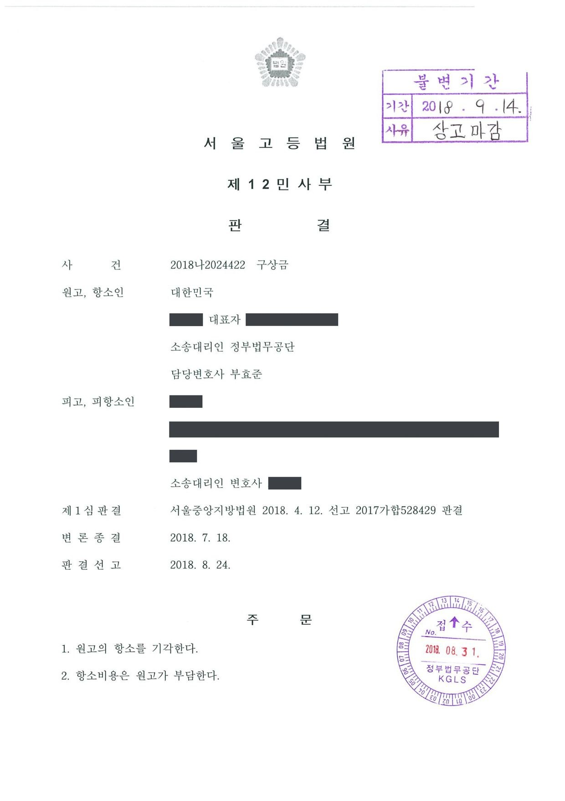

공무원에 대한 구상금 청구소송 (1·2심)
서울중앙지방법원 2017가합528429 · 서울고등법원 2018나2024422 · 담당변호사 부효준
판결문


사건의 요지
공무원의 직무상 불법행위로 국가가 배상금을 지급한 뒤 해당 공무원을 상대로 구상을 구한 사건으로, 고의·중과실의 인정과 구상 범위의 제한이 다투어졌습니다. 제1심은 8,000만 원의 구상을 인정했고 항소심은 쌍방의 결론을 유지했습니다.
사건의 주요 내용
국가기관에서 근무하던 피고는 2012년 5월 업무상 필요한 물품을 구입하기 위하여 소속 기관의 업무용 차량을 운전하던 중 신호를 위반하여 횡단보도를 건너던 보행자들을 들이받는 사고를 일으켰고, 피해자 한 명은 매우 중한 상해를 입었습니다. 피고는 교통사고처리특례법위반죄로 벌금 1,000만 원을 선고받았고, 피해자들이 국가와 피고를 상대로 제기한 손해배상 소송에서는 국가와 피고가 연대하여 약 9억 7,590만 원을 지급하라는 판결이 확정되었습니다.
국가는 2013년 10월과 12월 피해자들에게 손해배상금과 지연손해금 합계 약 11억 1,710만 원을 지급한 뒤, 국가배상법 제2조 제2항에 따라 피고에게 그중 30%에 해당하는 약 3억 3,513만 원의 구상금을 청구하는 소를 제기하였습니다. 부효준 변호사는 원고인 국가를 대리하였습니다.
쟁점
- 업무용 차량을 운전하다 신호위반으로 사고를 낸 소속 직원에게 국가배상법 제2조 제2항의 구상 요건인 중대한 과실이 인정되는지
- 국가가 운전자 연령을 제한한 종합보험에 가입하여 사고에 보험이 적용되지 않은 사정이 구상의무를 없애거나 구상범위를 보험료 할증액으로 한정하는지
- 손해의 공평한 분담이라는 관점에서 구상범위를 어느 한도로 제한할 것인지
피고의 주장
- 국가나 지방자치단체의 차량은 종합보험에 가입하도록 되어 있는데, 국가는 운전자 연령을 만 26세 이상으로 한정하는 특별약관으로 종합보험에 가입하고 이를 알지 못하는 피고에게 차량을 운행하게 하여 보험 적용을 받지 못하게 하였다. 따라서 별도의 손해배상금 지출은 국가의 잘못 때문이므로 구상의무가 없거나, 구상범위는 보험료 할증액 상당으로 제한되어야 한다.
- 설령 구상의무가 있더라도 피고가 지출한 형사합의금, 간병비 등을 고려하여 신의칙상 구상범위가 대폭 제한되어야 한다.
부효준 변호사의 주장
- 이 사건 사고는 신호위반과 횡단보도 보행자 보호의무 위반이라는 피고의 중대한 과실로 발생하였으므로, 국가배상법 제2조 제2항에 따라 피고는 국가가 피해자들에게 지급한 손해배상금을 구상할 의무가 있다.
- 국가는 지급한 손해배상금과 지연손해금 가운데 30%에 해당하는 금액을 구상금으로 청구하였다.
법원의 판단
법원은 피고가 신호위반과 횡단보도 보행자 보호의무 위반이라는 중대한 과실로 사고를 일으켰고 국가가 국가배상법 제2조 제1항에 따라 피해자들에게 손해를 배상하였으므로, 피고는 같은 조 제2항에 따라 배상액을 구상금으로 지급할 의무가 있다고 보았습니다. 국가가 종합보험을 의무적으로 가입하여야 한다는 근거가 없고, 보험 적용을 받지 못하게 되었다는 사정만으로 구상할 수 없다거나 구상범위가 보험료 할증액에 한정된다고 볼 수 없다고 하여 피고의 주장을 받아들이지 않았습니다.
구상의 범위에 관하여는 대법원 1991. 5. 10. 선고 91다6764 판결의 법리에 따라 제반 사정을 참작하였습니다. 피고가 공무원의 업무보조 등 단순 업무에 종사하면서 다른 공무원의 지시로 차량을 운전하던 중 사고가 났고, 운전자 연령 제한으로 종합보험이 적용되지 않는다는 고지를 받지 못하였으며, 국가도 소속 직원이 불측의 손해배상을 당하지 않도록 적절한 보험에 가입할 책무를 다하지 못하였다는 점이 고려되었습니다.
아울러 피고가 피해자의 치료비 1,000만 원과 간병비 200만 원을 실질적으로 부담하였고, 국가가 책임보험금을 제때 청구하지 못하여 그 부분의 회수가 불가능해진 점도 들어, 피고의 구상책임을 8,000만 원으로 제한하였습니다. 이에 따라 피고는 국가에 8,000만 원과 지연손해금을 지급하라는 일부 인용 판결이 선고되었고, 항소심(서울고등법원 2018나2024422)에서도 제1심의 결론이 그대로 유지되었습니다.
국가배상법 제2조 제2항에 의하여 국가 또는 지방자치단체가 산하 공무원에 대하여 구상권을 행사하는 경우 국가 등은 당해 공무원의 직무내용, 당해 불법행위의 상황, 손해발생에 대한 당해 공무원의 기여 정도, 당해 공무원의 평소 근무태도, 불법행위의 예방이나 손실분산에 관한 국가 또는 지방자치단체의 배려의 정도 등 제반 사정을 참작하여 손해의 공평한 분담이라는 견지에서 신의칙상 상당하다고 인정되는 한도 내에서만 당해 공무원에 대하여 구상권을 행사할 수 있다고 봄이 상당하다(대법원 1991. 5. 10. 선고 91다6764 판결 등 참조).
서울중앙지방법원 2017가합528429 판결 이유 '3. 나. 구상의무의 범위 — 1)'
위 인정사실에 의하면, 국가기관 소속 직원인 피고는 이 사건 차량을 운전하다가 신호위반 및 횡단보도 보행자 보호의무를 위반한 중대한 과실로 피해자들에게 상해를 입히는 손해를 가하였고, 원고는 국가배상법 제2조 제1항에 따라 위 피해자들에게 그 손해를 배상하였으므로, 특별한 사정이 없는 한 피고는 국가배상법 제2조 제2항에 따라 원고에게 위 배상액을 구상금으로 지급할 의무가 있다.
서울중앙지방법원 2017가합528429 판결 이유 '3. 가. 피고의 구상의무의 발생 — 1)'
※ 판결 이유 가운데 이 사건의 판단 기준이 된 부분을 그대로 옮긴 것으로, 당사자 이름 등은 가렸습니다.
이 사건이 보여 주는 것
공무원의 직무상 불법행위로 국가가 피해자에게 손해를 배상한 경우, 국가는 그 공무원에게 고의 또는 중대한 과실이 있을 때에만 구상할 수 있습니다(국가배상법 제2조 제2항). 신호를 위반하여 횡단보도의 보행자를 다치게 한 운전은 중대한 과실로 인정되었지만, 구상의 범위는 지급액 전부가 아니라 공무원의 직무내용, 불법행위의 상황, 평소 근무태도, 국가의 손실분산 배려 정도 등을 참작하여 신의칙상 상당한 한도로 제한됩니다.
이 사건에서는 국가가 운전자 연령을 제한한 종합보험에 가입하여 사고 당시 보험이 적용되지 않았던 점이 구상 범위를 크게 줄이는 사정으로 고려되었습니다. 공용차량을 운행하는 기관으로서는 보험 가입 범위를 점검하는 것이, 운전하는 직원으로서는 보험 적용 여부를 확인하는 것이 중요합니다.
관련 법령국가배상법 제2조 제1항·제2항(배상책임과 구상권) · 교통사고처리 특례법
관련 단어구상금국가배상법 제2조 제2항공무원 중과실구상권 제한신의칙공용차량 교통사고자동차종합보험 연령 특약일부 인용항소심 유지대법원 91다6764
비슷한 처분을 받으셨다면
행정처분은 처분이 있음을 안 날부터 90일 이내에 행정심판이나 취소소송으로 다투어야 하고, 기간이 지나면 돌이킬 수 없는 처분은 집행정지를 서둘러야 합니다. 처분서를 받은 날짜부터 확인해 드립니다.